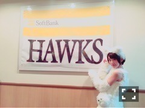
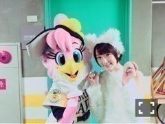
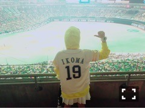
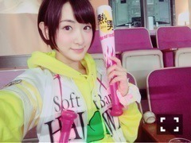

| 2016/03 30 Wed | 初めての始球式ヽ( ・∀・)ノ |
今日は福岡のヤフオク！ドームで
ソフトバンクホークスさんの開幕戦の始球式に参加してきましたヽ(・∀・)ノ
生駒ちゃん、
乃木坂に入るまでボール恐怖症で、
キャッチボール出来なくて。。
ボールをちゃんと投げる事すら出来なくて(´；ω；｀)
乃木どこ時代にキャッチボールを出来るようになりたくて、みさ先輩に協力してもらいながら出来るようになり、
去年は初森ベマーズでソフトボールを経験して
運動とは無縁だった私が
今日
ワンバンしたけど、真っ直ぐ投げられましたヽ(・∀・)ノヽ(・∀・)ノ

ギガちゃんにもパワーをもらって頑張りましたヽ(・∀・)ノ
本番前の練習では2.3球は届いたんです！
もし、また機会があればノーバンで行きたいなヽ(・∀・)ノヽ(・∀・)ノ
貴重な体験でした

投げたあと客席の皆さんから歓声を頂いたり、
ハリーもハニーちゃんもみんなハイタッチしてくれたよヽ(・∀・)ノ

ホークスさんのユニフォームを頂きました！
ずっと好きな番号19番をリクエストしました！
小、中男女通し番号で出席番号19で、しっくりくるんだヽ(・∀・)ノ

十四松が野球大好きだから、十四松パーカーを着て、白いスカートで合わせて
ホークスカラーで応援しましたヽ(・∀・)ノ

内川選手と松田選手の打席見れましたヽ(・∀・)ノ
わっしょい！わっしょい！
とファンの皆さんの応援を見ながら一緒に応援しましたヽ(・∀・)ノ
会場で見ると面白さも一体感も凄いですヽ(・∀・)ノヽ(・∀・)ノ
素晴らしい時間をありがとうございましたヽ(・∀・)ノ！！
お父さんとパシャリ
黄色と白色と言えば！
ハルジオン！
ハルジオンと言えば
乃木坂46ニューシングル
ハルジオンが咲く頃
皆さん聴いてますか〜？
仙台にあすかとみおなとリリースのキャンペーンをしに行って来ましたヽ(・∀・)ノ
沢山の媒体さんに取り上げて頂いたり、ラジオ終わったら仙台のファンの皆様が温かく見送ってくださたり、
聴いた感想とかも聞けて嬉しかったです！！
牛タンもたらふく食べました

セミナーも、参加して下さった皆さんの真面目な気持ちがひしひしと伝わって来ました！
だから、私達も全力でいろいろお話しさせてもらいました！
少しでも参考になったら嬉しいです！！
未来の乃木坂を担う子を待ってますヽ(・∀・)ノ
沢山詰め込んじゃった〜！！
明日はお渡し会！
只今絶賛右半身筋肉痛！
左手だけでお渡し会かもね笑笑
へばなっ☆彡
コメント(413)
2016/03/30 00:10